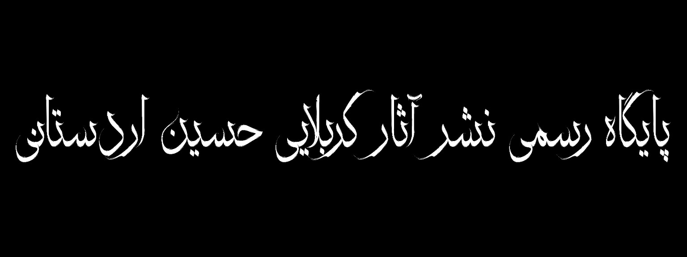
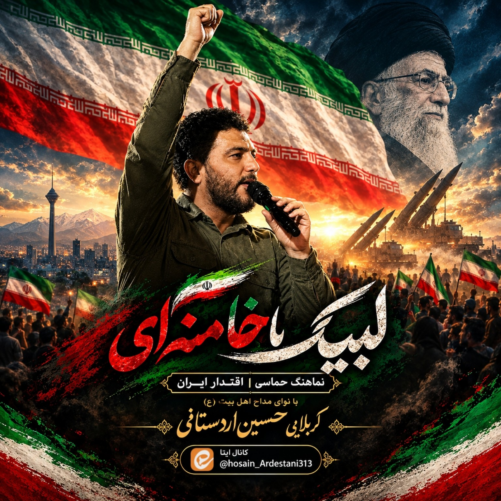
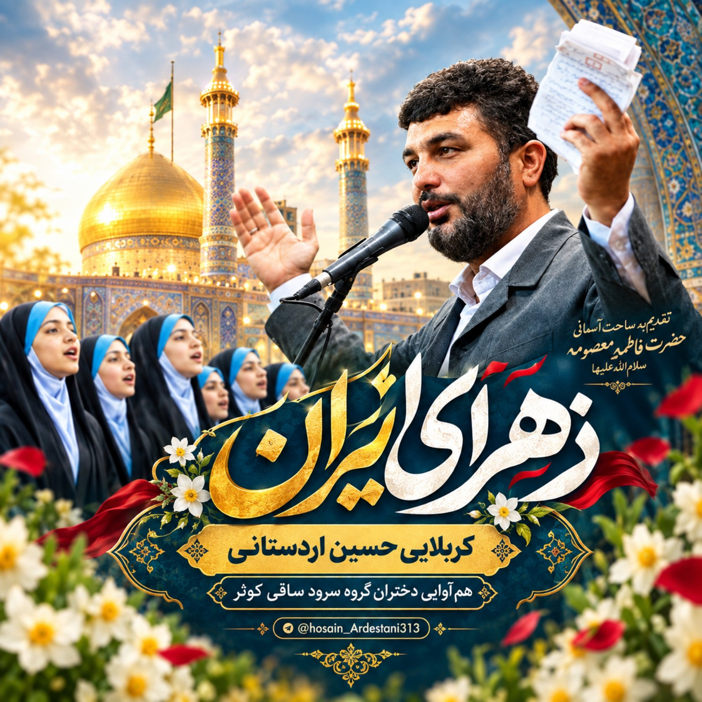

نماهنگ تصویری
مشاهده در آپارات ↗زهرای ایران
با صدای کربلایی حسین اردستانی

دیدن نماهنگهای تصویری کربلایی حسین اردستانی
با صدای کربلایی حسین اردستانی
شنیدن نماهنگهای صوتی کربلایی حسین اردستانی

کربلایی حسین اردستانی

کربلایی حسین اردستانی
مشاهده تصاویر کربلایی حسین اردستانی
دسترسی به کانال ایتا و صفحه آپارات کربلایی حسین اردستانی
اخبار، مجالس و محتوای منتشرشده در کانال رسمی.
نماهنگها، کلیپها و آثار ویدیویی منتشرشده.
معرفی کوتاه کربلایی حسین اردستانی
کربلایی حسین اردستانی از دوران کودکی در محافل قرآنی و مجالس اهلبیت علیهمالسلام حضور داشته و از همان سالها با فضای قرآن، ذکر و مداحی انس گرفته است.
این مسیر در طول سالهای زندگی ادامه پیدا کرده و با حضور در مجالس مذهبی، به مدیحهسرایی و مرثیهخوانی اهلبیت علیهمالسلام در شهر مقدس قم و استان های کشور پرداخته است.